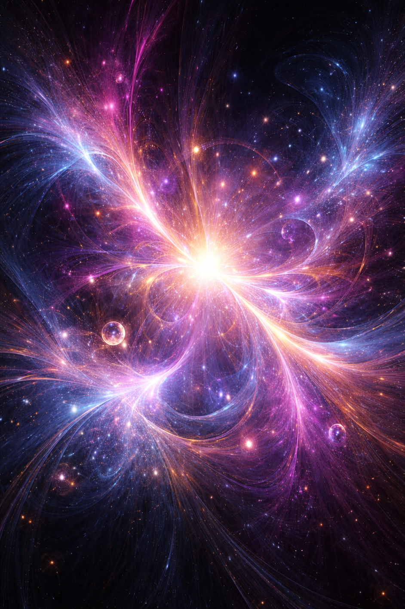

Between here and there is the expanse
where all outcomes already exist;
a quantum vacuum, beyond space and time -
the absolute emptiness,
waiting for fullness to unfold;
where the Ground of the Godhead,
in this eternity of now,
within each singular soul,
constantly creates the Logos,
so that we, with free will,
may partake in the manifestation
of what is, what was, and what shall be...
So lead us not into temptation
and deliver us from all evil,
that Your will may manifest -
here on Earth, as in Heaven.